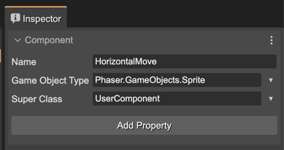
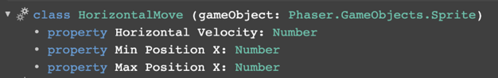
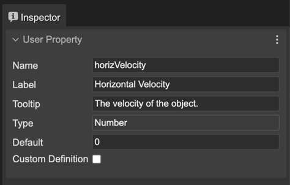
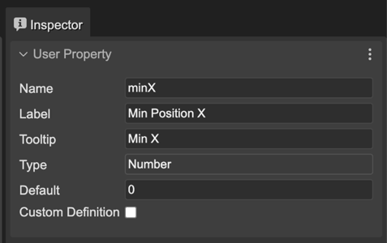
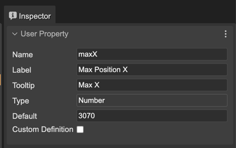
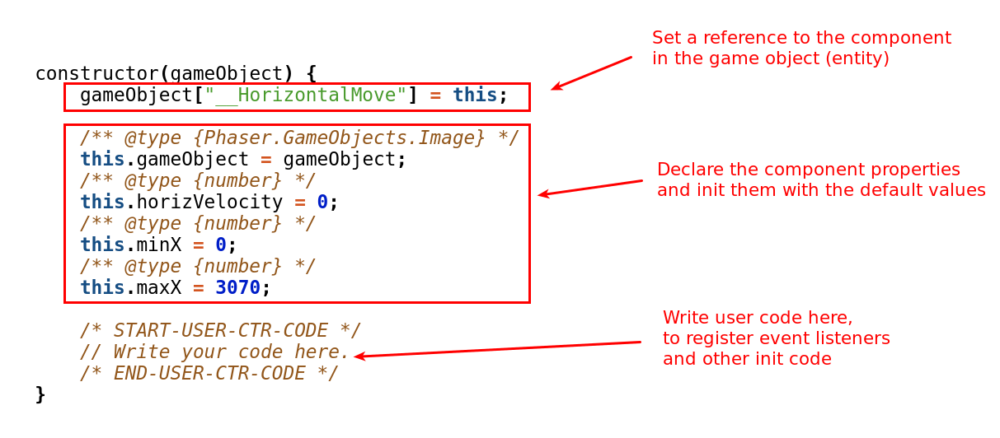
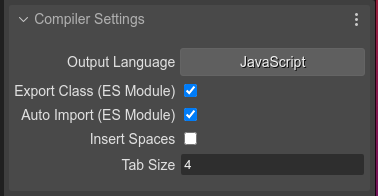

The User Components compiler
The user components are configured in *.components files and used by the Scene Editor. It is a concept of Phaser Editor 2D, not Phaser. So we use the same Scene Editor philosophy, it compiles our custom configurations into plain, readable, fully Phaser compatible code.
Following, look at how an HorizontalMove component is compiled into JavaScript.
The component information:
The properties of the component:
Horizontal Velocity
Min X
Max X
The generated code:
// You can write more code here
/* START OF COMPILED CODE */
class HorizontalMove extends BaseComponent {
constructor(gameObject) {
gameObject["__HorizontalMove"] = this;
/** @type {Phaser.GameObjects.Image} */
this.gameObject = gameObject;
/** @type {number} */
this.horizVelocity = 0;
/** @type {number} */
this.minX = 0;
/** @type {number} */
this.maxX = 3070;
/* START-USER-CTR-CODE */
// Write your code here.
/* END-USER-CTR-CODE */
}
/** @returns {HorizontalMove} */
static getComponent(gameObject) {
return gameObject["__HorizontalMove"];
}
/* START-USER-CODE */
// Write your code here.
/* END-USER-CODE */
}
/* END OF COMPILED CODE */
// You can write more code here
The generated class is very simple, next we explain it part by part:
The super class
If a value (in this case BaseComponent) is set to the Super Class parameter. Then the class code is generated like this:
class HorizontalMove extends BaseComponent {
...
}
A super class allows to create behaviors that are common to certain components, or provide helper methods. It is the case of the UserComponent class, explained in the Starting and updating the User Components section.
Warning
A common error when extending components is to load the script files in the Asset Pack Editor, using the Script file type. It can cause a “missing class” error at the execution of the game. The problem is that the scripts files are loaded and executed in any order. The solution is to add the scripts using the Scripts file type of the Asset Pack Editor. It allows setting the execution order of the scripts: the super class script UserComponent.js should be executed before the component script HorizontalMove.js.
Also, to avoid this error, you can use a bundler like Webpack, Parcel, or just TypeScript (compiling all to a single file).
The constructor
The component has a constructor where all properties are initialized and you can add your initialization code too.
The constructor is used to create the component and add it to the game object:
const enemy = this.add.image(...);
const enemyMove = new HorizontalMove(enemyMove);
enemyMove.maxX = 400;
The component accessor method
The getComponent() method gets the component from a game object, if exists:
class HorizontalMove {
...
/** @returns {HorizontalMove} */
static getComponent(gameObject) {
return gameObject["__HorizontalMove"];
}
}
// in a random part of the game
const enemy = ...;
const horizMove = HorizontalMove.getComponent(enemy);
horizMove.minX = 10;
The user members of the component
You can add members to the component class. Just write them inside the /* STAR-USER-CODE */ and /* END-USER-CODE */ comments.
Probably, you would like to write a start and update method, like is explained in the Starting and updating components section.
Compiler settings
The User Components compiler supports two JavaScript and TypeScript as output languages. You can select this language in the Inspector view, when no component is selected. Also, you can select if insert spaces for indentation, the tab size, or the auto export/import of ES modules:
The settings have default values, but if there are other scene files or user components files, the default values will be taken from the latest modified file (scene file if not components files are available).
When the Export Class (ES Module) parameter is on, the compiler includes the export default class modifiers.
When the Auto Import (ES Module) parameter is on, the compiler adds “import” statements for importing the types used in different parts of the code generation. Code written by the user is not processed. If you use other types, you should import them manually.